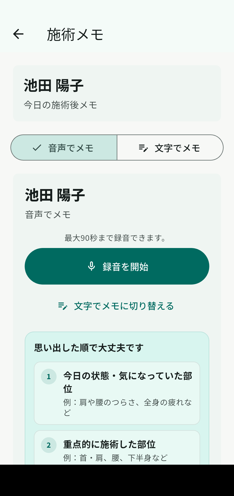
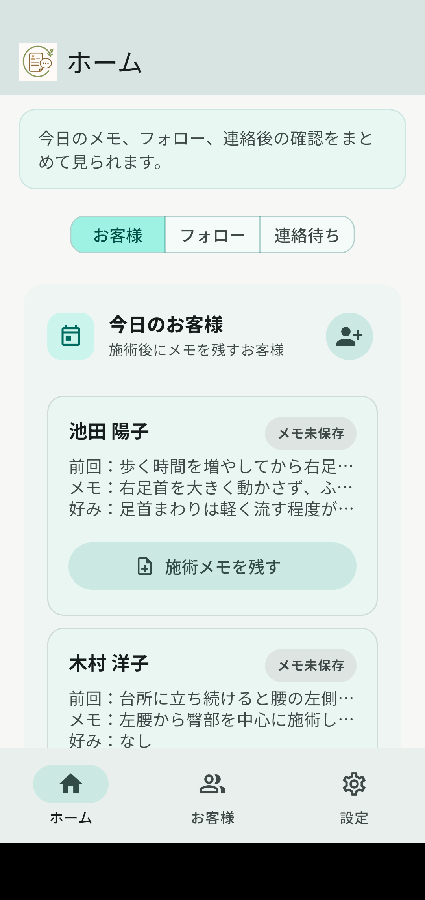
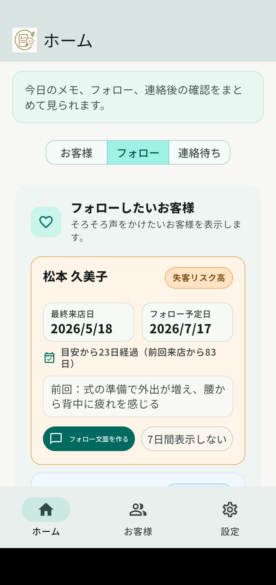
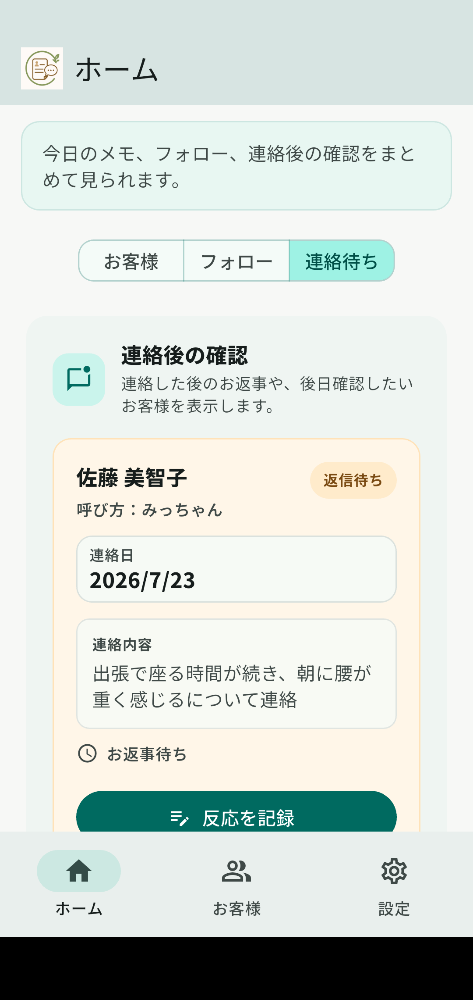

施術後に、音声・文字でかんたんメモ
施術直後に、話すか入力するだけ。音声は最大90秒まで録音でき、忙しい合間でもメモを残しやすくします。

ひとり整体・個人リラク・自宅サロン向け
施術後の内容を音声や文字で簡単にメモ。
見返しやすく整理して、そろそろ声をかけたいお客様の確認や、LINE・DMの文面づくりまでサポートします。
Android版 クローズドテスト実施中
テスト期間中は全機能を無料でお使いいただけます。
※ 現在はAndroid版のみです。

日々の施術のあとに
目の前のお客様を大切にしているからこそ、記録や連絡があとになってしまうことがあります。
できること
予約や決済のためではなく、施術後の小さな記録とお客様との関係づくりに集中したアプリです。
施術直後に、話すか入力するだけ。音声は最大90秒まで録音でき、忙しい合間でもメモを残しやすくします。

前回来店やフォロー予定をもとに、そろそろ連絡したいお客様を確認できます。必要なときは、そのままLINE・DM文面の作成へ進めます。

返信待ちや次回予約など、連絡した後の状況も記録できます。次にどう対応するかを確認しやすくします。

残した内容を見返しやすく整理。前回の内容を必要なときに振り返れます。
施術の好み、次回気をつけること、覚えておきたいことをまとめて残せます。
施術内容や会話をもとに文面を作成。内容を確認・修正してから、ご自身で送ります。
※ 自動送信ではありません。使い方
施術終了
いつもの施術を終えたらメモを残す
音声または文字で手短に見返しやすく整理
残した内容を整理して、必要なときに確認必要なときに声をかける
文面を確認・修正してご自身で送信こんな方に
大がかりな店舗管理ではなく、日々の施術記録と丁寧なフォローを整えたい方に向いています。
安心して使うために
大切なお客様の情報を扱うアプリとして、保存や外部送信の範囲に配慮しています。
顧客データや来店履歴などのメインデータは、基本的にご利用の端末内に保存します。
音声の文字起こしやLINE・DM文面作成など、必要な機能でのみ外部サービスへの送信が発生します。全顧客・全来店履歴を一括で送る仕組みではありません。
LINE・DMの文面は利用者が内容を確認・修正し、ご自身で送信します。
機種変更や万一に備えられる、暗号化バックアップに対応しています。
料金
正式リリース時の料金プランは現在準備中です。
Free
詳細は正式公開前にお知らせします。
Standard
詳細は正式公開前にお知らせします。
Pro
詳細は正式公開前にお知らせします。
※ 記載のプラン名・内容は変更になる場合があります。料金の詳細は正式公開前にお知らせします。
Android版 テスター募集中
個人で施術のお仕事をされている方の声をもとに、より使いやすいアプリへ整えていきます。
現在はAndroid版のみです。
参加手順
STEP 1
テスター用のGoogleグループへ参加してください。
Googleグループに参加する新しいタブで開きますSTEP 2
グループへの参加後、ストアページからインストールしてください。
Google Playで開く新しいタブで開きますご確認くださいGoogleグループに参加しているGoogleアカウントと、Google Playで使用するGoogleアカウントは同じものをお使いください。
よくある質問
不明な点がありましたら、お気軽にお問い合わせください。
いいえ。リピトークは予約・決済・POS・スタッフ管理のためのアプリではありません。施術後の記録から再来店フォローまでを支える業務支援アプリです。
いいえ。LINEとの自動連携や、LINE・DMを自動送信する機能はありません。リピトークが文面づくりをサポートし、利用者ご自身が内容を確認・修正してから送信します。
現在はAndroid版のみです。iPhone版については現在未定です。
顧客データや来店履歴などのメインデータは、基本的にご利用の端末内へ保存されます。暗号化バックアップにも対応しています。
クローズドテスト期間中は、すべての機能を無料でお使いいただけます。正式公開後の料金については、正式公開前にお知らせします。
音声メモの文字起こしや、メモの整理、LINE・DMで使う文面づくりなど、必要な場面のサポートに使います。全顧客・全来店履歴を一括で外部AIへ送る仕組みではありません。
音声ファイルは文字起こしのため一時的に扱い、送信成功後に削除します。
お問い合わせ
クローズドテストやアプリについて、メールでお問い合わせいただけます。